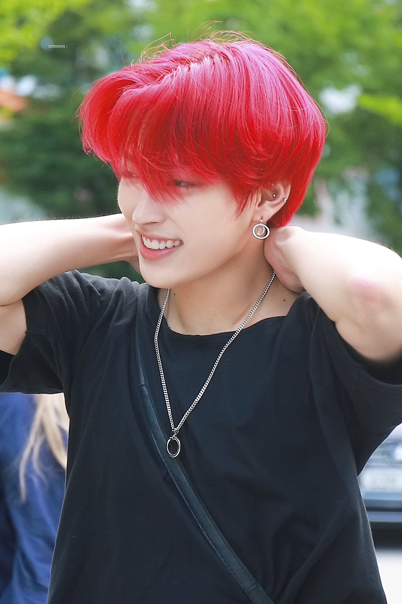
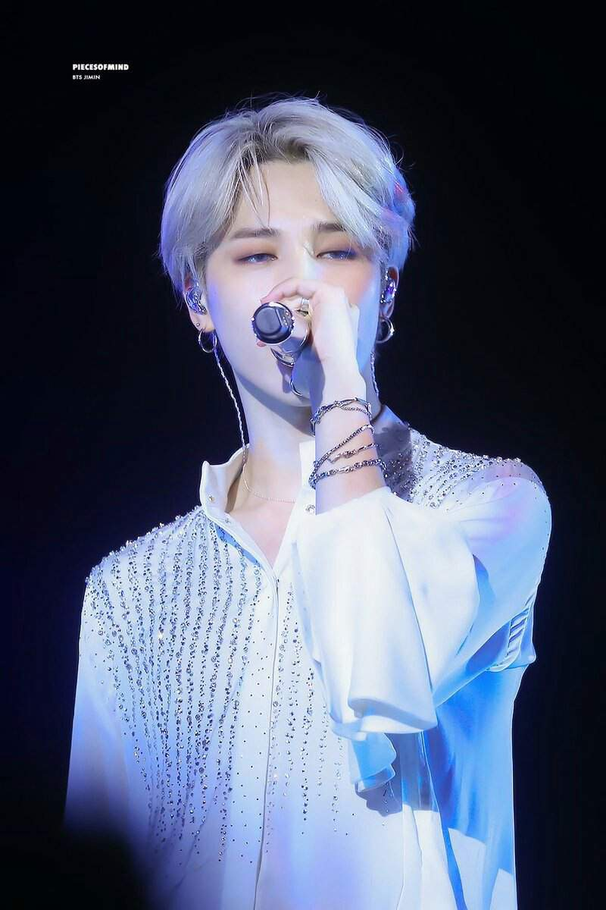

About Us

Who We Are
Welcome to kpopnews.com! We are a site created by kpop buffs—sharing our unique expertise and knowledge. We offer articles ranging from kpop beauty to the craziest scandals kpop groups has been victim of. If you’re looking for information that is kpop related, we are here to answer your questions!
Our Purpose and Goal
Our goal at kpopnews.com is to be the best place online to find high-quality, informative-style content. We are also a platform for enthusiasts and aficionados to create original, useful, in-depth content. In most cases, we pair our authors with professional editors to create a well-written, informative piece.

Our Team
We are a diverse group of engineers, product and community advocates, moderators, and editors that are passionate about writing and online know-how. In addition to our official team, we are a tight-knit community of thousands of writers and enthusiasts.
Join Us!
If you have kpop knowledge, we'd love to have you on our team of writers. Feel free to check out our Editorial Policy and write your own article! kpopnews.com is part of the parent company HubPages, a place to discover and create original, in-depth, useful, media-rich pages on topics you are passionate about.
Contact Us